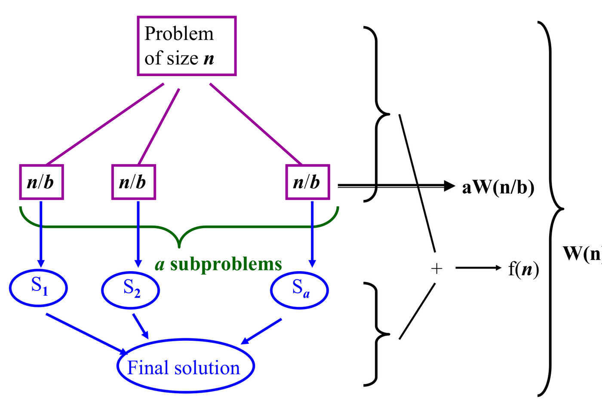

Divide-and-conquer and recursive algorithms naturally yield
recurrence relations—equations expressing the running
time
on an input of size
in terms of
evaluated on strictly smaller inputs
(e.g. ).
Because recurrences do not explicitly disclose asymptotic growth,
solving them to derive closed-form bounds is a central task in algorithm
analysis.
This chapter covers the five analytical techniques:
Substitution (induction), Iteration
(unrolling), Recursion Trees, the Master
Theorem, and the Characteristic Equation
Method for linear homogeneous recurrence relations.
1. Divide-and-Conquer
Recurrences
A standard divide-and-conquer recurrence has the universal form:
:
The number of recursive subproblems generated per step.
:
The factor by which the input shrinks, making each subproblem size
.
:
The cost of dividing the problem and combining subproblem
solutions.

A problem of size
decomposes into
subproblems of size
.
Dividing and combining costs
.
2. The Substitution
Method (Inductive Proofs)
The substitution method guesses the asymptotic bound and proves it
formally via mathematical induction.
Step-by-Step
Method: The Substitution Protocol
State the Inductive Guess: Formulate an explicit
hypothesis
(e.g.
for
).
Inductive Step: Assume the hypothesis holds for all
subproblem sizes
.
Substitute into the recurrence and show that the exact same
functional form with the exact same constant
holds for
.
Handle Residual Terms by Subtracting Constants:
If substitution yields an unwanted positive constant
(e.g. ,
which fails because
),
subtract a lower-order term in the initial guess:
.
Each subproblem scales
,
generating
,
which absorbs positive residuals.
Base Case: Select
and
sufficiently large to satisfy the base conditions.
3. The Iteration (Unrolling)
Method
The iteration method expands the recurrence step-by-step until an
algebraic pattern emerges, summing all terms down to the base case.
Step-by-Step Method:
Recurrence Unrolling
Expand
Times: Substitute
or
repeatedly, maintaining unsimplified coefficients to identify geometric
or arithmetic progressions.
Express at Step
:
Write
as a function of
and the base index.
Set Boundary Condition: Set
(or
)
to solve for the terminal iteration count
.
Evaluate Sums: Apply standard formulas:
Geometric Series:
Arithmetic Series:
Tutorial 8 Q1: Solving Recurrences via Iteration
Question: Solve the following recurrences by the
iteration method:
,
and for
:
,
and for
:
Solution:
Part 1:
with
Set
:
Part 2:
with
Evaluating the
arithmetico-geometric sum:
Combining terms gives:
Tutorial 8 Q2: Proving Iteration Solutions via
Mathematical Induction (Substitution)
Question: Prove by the substitution method that:
satisfies
with
.
satisfies
with
.
Solution:
Proof 1:
Base Case
():
.
Holds.
Inductive Step: Assume
for
.
For
:
Matches target form for
.
Proved.
Proof 2:
Base Case
():
.
Holds.
Inductive Step: Assume
for
.
For
:
Matches target form for
.
Proved.
4. The Recursion Tree and
Master Theorem
A recursion tree visualizes recursive branching. Level
contains
subproblems of size
.
The total number of leaf nodes at depth
is:
The leaf level of a recursion tree
contains
nodes, each executing base case work
.
The Master Theorem
For
with
:
Compare the non-recursive work
against the watershed function
:
flowchart TD
Comp["Compare f(n) vs n^(log_b a)"] --> C1["Case 1: Leaf-Heavy<br/>f(n) = O(n^(log_b a - eps))<br/>T(n) = Theta(n^(log_b a))"]
Comp --> C2["Case 2: Balanced<br/>f(n) = Theta(n^(log_b a) lg^k n)<br/>T(n) = Theta(n^(log_b a) lg^(k+1) n)"]
Comp --> C3["Case 3: Root-Heavy<br/>f(n) = Omega(n^(log_b a + eps)) AND a f(n/b) <= c f(n)<br/>T(n) = Theta(f(n))"]
Case 1 (Leaf-Heavy):
is polynomially smaller than
.
Leaves dominate:
Case 2 (Balanced):
has the same growth rate as
:
Case 3 (Root-Heavy):
is polynomially larger than
,
and satisfies the regularity condition
(
for some
):
[!WARNING] Polynomial Separation Requirement: The
difference between
and
must be polynomial
().
If
,
is asymptotically smaller than
,
but NOT polynomially smaller. The Master Theorem does not apply; use
substitution or recursion trees.
Tutorial 8 Q3: Application of the Master Theorem Across
All Cases
Question: Solve the following recurrences using the
Master Method:
Solution:
:
.
.
Matches Case 2
():
.
:
.
.
Matches Case 2
():
.
:
.
.
Since
for
(
grows faster than
),
is polynomially smaller than
.
Matches Case 1:
.
:
.
.
Matches Extended Case 2
():
5.
Linear Homogeneous Recurrences with Constant Coefficients
A recurrence relation has the linear homogeneous form of degree
:
The Characteristic Equation
Method
Substitute candidate solution
,
yielding the characteristic equation:
Distinct Real Roots
():
General solution is
.
Repeated Roots of Multiplicity
():
General solution is
.
Constants
are uniquely determined by substituting initial base conditions.
Tutorial 8 Q4: Classifying Linear Homogeneous
Recurrences
Question: Determine which of the following are
linear homogeneous recurrence relations with constant coefficients, and
state their degree:
Solution:
:Yes, linear homogeneous with constant coefficient
().
Degree 1.
:No. Non-linear due to squaring of term
.
:No. Non-homogeneous due to independent variable
function
.
:Yes, linear homogeneous
().
Degree 2.
Tutorial 8 Q5: Solving Characteristic Equations with
Initial Conditions
Question: Solve the following recurrence relations
with given initial conditions: